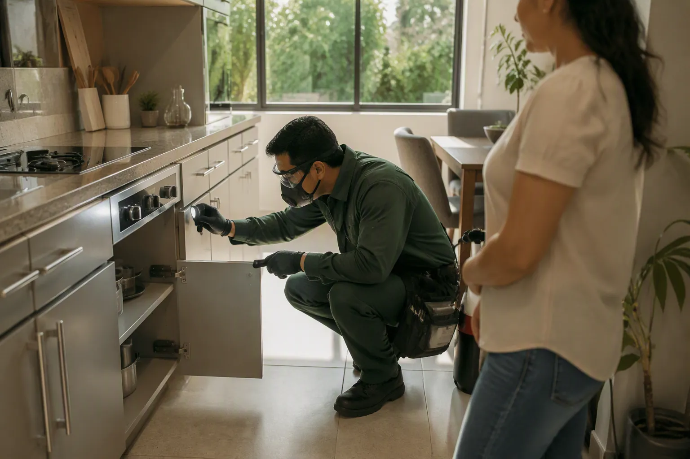
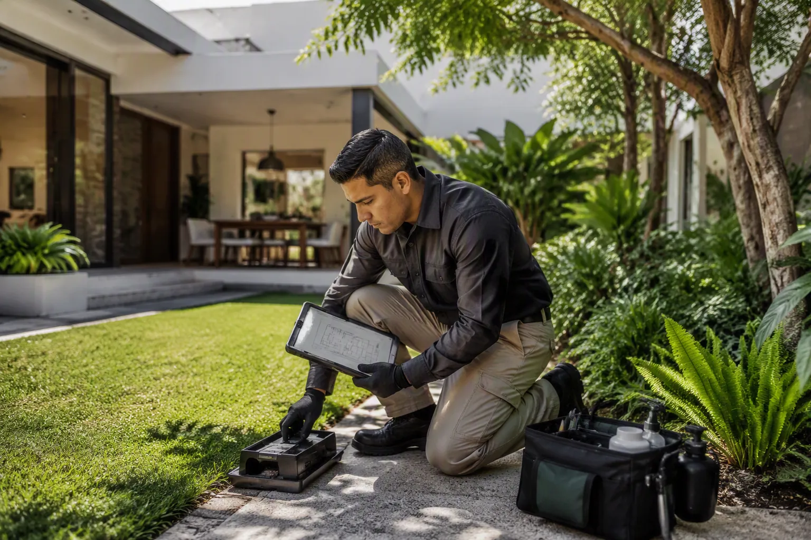

CONTROL PROFESIONAL · IXTAPALUCA
Tu hogar, protegido con atención que se nota.
Soluciones claras, discretas y respaldadas con documentación digital.
Solicitar servicio
Soluciones claras, discretas y respaldadas con documentación digital.
Solicitar servicioRevisamos puntos críticos y recomendamos acciones concretas.
Ver solucionesReportes, constancias, planos, mapas de calor y solicitudes.
Conocer el portalAdaptamos la atención al espacio, la actividad detectada y el seguimiento que necesitas.
Inspección de cocina, baños, patios, accesos y puntos críticos.
Tratamientos focalizados para perímetros, jardines y cocheras.
Atención discreta, evidencia y documentación organizada.

Conversamos, inspeccionamos áreas clave y definimos una estrategia adecuada. Al finalizar recibes indicaciones, evidencia y documentación.
Atención puntual cuando detectaste actividad en casa.
Inspección · Servicio · Reporte · ConstanciaHistorial, visitas programadas y acceso privado.
Portal · Documentos · Planos · SolicitudesOrganizamos recorridos residenciales y comerciales durante el día.
Clientes frecuentes consultan historial, descargan documentos y solicitan atención desde un acceso privado impulsado por PestOS.
Documento listo para consultar y descargar.
Las fotografías proporcionadas fueron recortadas y optimizadas para la web.
Conoce el proceso, los paquetes, los cuidados y los requisitos. Al final encontrarás el reto interactivo Fumi-Car.
Ixtapaluca, Estado de México. Horario de 8:00 a 18:00.
55 4711 7493